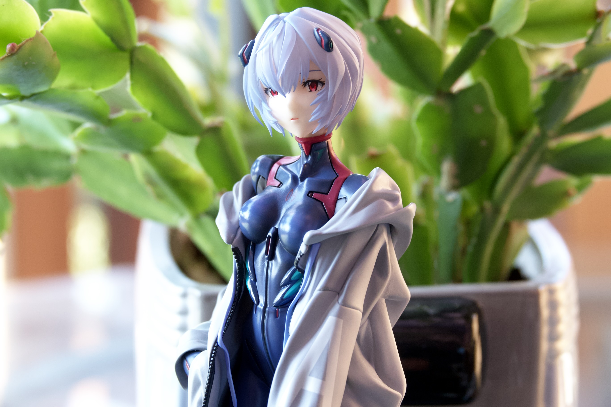

Five photographs · two renditions each
A good SDR image.
Room for more in HDR.
Move the divider or switch between renditions. Both come from the same Dark Melon export: the SDR base is unchanged, and the HDR version adds its embedded gain map.

SDR
HDR
↔
Look at the highlights
Choose a photograph above, then compare bright surfaces, lights, and reflections. HDR can extend brightness and tonal separation beyond SDR white, while the SDR image remains a complete rendition.
Seeing little or no difference?
That is expected on an SDR viewing path. HDR needs a compatible display, browser, OS, and ISO 21496-1 gain-map decoder. The capability indicator reports what the browser advertises; it cannot verify that the gain map was rendered.